정답
정답
PEM 도체: 교류회로에서 중간도체 겸용 보호도체이다.
PEL 도체: 직류회로에서 선도체 겸용 보호 도체이다.
| 점수 | 세부기준 |
|---|---|
| 4점 | 문항 (1), (2)가 모두 맞은 경우 4점 획득 |
| 2점 | 문항 (1), (2) 중 정답 1개당 2점 획득, 오류가 있으면 0점 |
용어의 정의(KEC 112)
PEN 도체(Protective Earthing conductor and Neutral conductor)란 교류회로에서 중성선 겸용 보호도체를 말한다.
PEM 도체(Protective Earthing conductor and Mid-point conductor)란 직류회로에서 중간도체 겸용 보호도체를 말한다.
PEL 도체(Protective Earthing conductor and a Line conductor)란 직류회로에서 선도체 겸용 보호도체를 말한다.
| 상(문자) | 색상 |
|---|---|
| \(L_1\) | ① |
| \(L_2\) | 흑색 |
| \(L_3\) | ② |
| \(N\) | ③ |
| 보호도체 | ④ |
정답
①
②
③
④
정답
① 갈색
② 회색
③ 청색
④ 녹-황색 (또는 녹색-노란색)
부분점수
| 점수 | 세부기준 |
|---|---|
| 4점 | 소문항 4개가 모두 맞은 경우 4점 획득 |
| 1점 | 소문항 총 4개 중 정답 1개당 1점 획득, 오류가 있으면 0점 |
해설
한국전기설비규정(KEC)에 규정되어 있는 것을 묻는 문제로 암기 위주로 접근해야 한다.
| 상(문자) | 색상 |
|---|---|
| L1 | 갈색 |
| L2 | 흑색 |
| L3 | 회색 |
| N | 청색 |
| 보호 도체(PE) | 녹-황색(녹색-노란색) |
| 용량별 | 점검 횟수 | 점검 간격 |
|---|---|---|
| 저압 300[kW] 이하 | 월 1회 | 20일 이상 |
| 저압 300[kW] 초과 | 월 2회 | 10일 이상 |
| (특)고압 300[kW] 이하 | 월 1회 | 20일 이상 |
| (특)고압 300[kW] 초과~500[kW] 이하 | 월 1회 | 20일 이상 |
| (특)고압 500[kW] 초과~700[kW] 이하 | 월 3회 | 10일 이상 |
| (특)고압 700[kW] 초과~1,500[kW] 이하 | 월 5회 | 6일 이상 |
| (특)고압 1500[kW] 초과~2,000[kW] 이하 | 월 7회 | 8일 이상 |
| (특)고압 2,000[kW] 초과 | 월 9회 | 10일 이상 |
정답
(해설) 단순 암기형 / 난이도 下
① 2, ② 10, ③ 3, ④ 7, ⑤ 4, ⑥ 5, ⑦ 5, ⑧ 4, ⑨ 6, ⑩ 3
| 점수 | 세부기준 |
|---|---|
| 5~0점 | 소문항 총 10개 중 정답 2개 당 부분점수 1점 획득 |
전기안전관리자의 직무에 관한 고시 제4조 점검주기 및 점검횟수에 대해 묻는 문제로 암기 위주로 접근해야 한다.
전기안전관리법 제22조 제6항 및 같은 법 시행규칙 제30조제3항의 규정에 따른 「전기안전관리자의 직무에 관한 고시」 제4조(점검주기 및 점검횟수) 안전관리업무를 대행하는 전기안전관리자는 전기설비가 설치된 장소 또는 사업장을 방문하여 점검을 실시해야 하며 그 기준은 다음과 같다.
| 용량별 | 점검횟수 | 점검 간격 |
|---|---|---|
| 저압 1~300kW 이하 | 월 1회 | 20일 이상 |
| 300kW 초과 | 월 2회 | 10일 이상 |
| 고압 1~300kW 이하 | 월 1회 | 20일 이상 |
| 300kW 초과~500kW 이하 | 월 2회 | 10일 이상 |
| 500kW 초과~700kW 이하 | 월 3회 | 7일 이상 |
| 700kW 초과~1,500kW 이하 | 월 4회 | 5일 이상 |
| 1,500kW 초과~2,000kW 이하 | 월 5회 | 4일 이상 |
| 2,000kW 초과~ | 월 6회 | 3일 이상 |
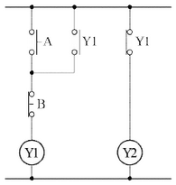
위의 시퀀스 제어회로에서 출력 \(Y_1, Y_2\)의 논리식을 구하시오. 정답 \[ ① Y_1: \] \[ ② Y_2: \]
위의 시퀀스 제어회로를 무접점 회로로 나타내시오. 정답
\[ Y_1 = (Y_1 + A) \cdot B \]
\[ Y_2 = \overline{Y_1} \]
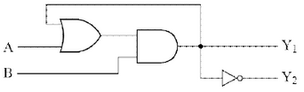
| 점수 | 세부기준 |
|---|---|
| 4점 | 소문항 (1), (2) 총 2개가 모두 맞은 경우 4점 획득 |
| 2점 | 소문항 총 2개 중 정답 1개당 2점 획득, 오류가 있으면 0점 |
논리식을 구할 때 유접점 회로의 a접점과 b접점을 구분하고 직렬과 병렬을 구분하여 무접점 논리회로로 표현해야 한다. a접점은 A로 b접점은 \(\overline{A}\)로 적고, 직렬연결이면 논리곱(AND, •)으로, 병렬연결이면 논리합(OR, +)으로 표현한다.
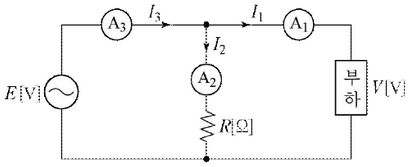
[계산과정]
정답
[계산과정]
정답
해설: 단순 계산형 / 난이도 下
[계산과정]
\[ P = \frac{25}{2}(10^2 - 4^2 - 7^2) = 437.5 [W] \]
정답 437.5 [W]
[계산과정]
\[ \cos\theta = \frac{10^2 - 4^2 - 7^2}{2 \times 4 \times 7} = 0.625 \]
정답 62.5 [%]
| 점수 | 세부기준 |
|---|---|
| 5점 | 문항 (1), (2)가 모두 맞은 경우 5점 획득 |
| 3점 | 문항 (1)의 계산과정과 답안이 모두 맞으면 3점, 오류가 있으면 0점 |
| 2점 | 문항 (2)의 계산과정과 답안이 모두 맞으면 2점, 오류가 있으면 0점 |
단상전력 측정법인 3전류계법을 이용해서 풀이하는 문제로, 또 다른 단상전력 측정법인 3전압계법과 삼상전력 측정법인 2전력계법 공식을 함께 정리해둔다.
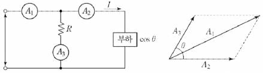
\(A_1 = \sqrt{A_2^2 + A_3^2 + 2A_2A_3\cos\theta}\) 이므로 양변을 제곱한다.
$ A_1^2 = A_2^2 + A_3^2 + 2A_2A_3$ 이므로 \(\cos\theta\)를 구한다.
$ = $가 된다.
이 경우 부하에 걸리는 전력 P는 다음과 같다.
\[ P = VI\cos\theta = RA_3 \times A_2 \times \frac{A_1^2 - A_2^2 - A_3^2}{2A_2A_3} = R\frac{(A_1^2 - A_2^2 - A_3^2)}{2}[W] \]
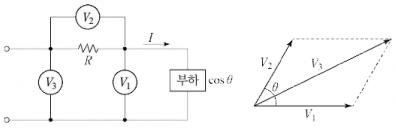
$ V_3 = $ 이므로 양변을 제곱한다.
$ V_3^2 = V_1^2 + V_2^2 + 2V_1V_2$이므로 \(\cos\theta\)를 구한다.
$ = $가 된다.
이 경우 부하에 걸리는 전력 P는 다음과 같다.
\[ P = V_1I\cos\theta = V_1 \times \frac{V_2}{R} \times \frac{V_3^2 - V_1^2 - V_2^2}{2V_1V_2} = \frac{1}{2R}(V_3^2 - V_1^2 - V_2^2)[W] \]
단상 전력계 2대로 삼상전력과 역률을 측정하는 방법이다. 전력계의 지시값을 \(P_1, P_2\)라고 한다.
\[ P = P_1 + P_2 [W], P_r = \sqrt{3}(P_1 - P_2) [Var] \]
\[ P_a = 2\sqrt{P_1^2 + P_2^2 - P_1P_2} [VA] \]
\[ \cos\theta = \frac{P_1 + P_2}{2\sqrt{P_1^2 + P_2^2 - P_1P_2}} \]
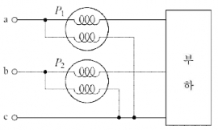
차단기 정격차단용량 [MVA]
| 10 | 20 | 30 | 50 | 75 | 100 | 150 | 250 | 300 | 400 | 500 |
|---|
[계산과정]
정답
[계산과정]
정답
해설: 단순 계산형 / 난이도 중
[계산 과정]
\[ 정격 전류 I_n = I_s \times \%Z = 8,000 \times 58.5\% = 4,680 [A] \]
\[ 용량 P_n = \sqrt{3} \times \text{공칭 전압} \times \text{정격 전류} = \sqrt{3} \times 6,600 [V] \times 4,680 [A] = 53.50 [MVA] \]
정답 53.50 [MVA]
[계산 과정]
\[ 용량 P_s = \sqrt{3} \times \text{정격 전압} \times \text{정격 차단 전류} = \sqrt{3} \times 7,200 [V] \times 8,000 [A] = 99.77 [MVA] \]
※ [표] (99.77 [MVA] 이상), (100 [MVA]) 참고
정답 100 [MVA] 선정
| 점수 | 세부 기준 |
|---|---|
| 6점 | 소문항 (1), (2) 총 2개의 계산 과정과 정답이 모두 맞은 경우 6점 획득 |
| 3점 | 소문항 총 2개 중 계산 과정과 정답이 모두 맞은 1개당 3점 획득 |
[차단기 용량]
기준 용량 =$ $
단락 용량 =$ = P_n $
차단 용량 =$ $ (여기서, 정격 차단 전류 단락 전류)
[공칭 전압과 정격 전압의 관계]
공칭 전압: 전선로를 대표하는 선간 전압
(3.3, 6.6, 22, 22.9, 66, 154, 345, 765 [kVA] 등)
차단기 정격 전압: 사용상 기준이 되는 전압
| 공칭 전압 [kV] | 3.3 | 6.6 | 22 | 22.9 | 66 | 154 | 345 | 762 |
|---|---|---|---|---|---|---|---|---|
| 정격 전압 [kV] | 3.6 | 7.2 | 24 | 25.8 | 72.5 | 170 | 362 | 800 |
[계산과정]
정답
해설) 단순 계산형 / 난이도 中
정답
[계산과정] \(e = \frac{P}{V_r}(R + X \tan\theta)\)을 변형하면
\[ P = \frac{e V_r}{R + X \tan\theta} = \frac{600 \times 6,000}{1.4 + 1.8 \times \frac{0.6}{0.8}} \times 10^{-3} \approx 1,309.09 [kW] \]
정답 1,309.09 [kW]
부분점수
| 점수 | 세부기준 |
|---|---|
| 4점 | 계산과정과 정답이 모두 맞은 경우 4점 획득, 오류가 있으면 0점 |
해설
3상 전압강하 공식을 이용하여 변형하고 정리해보면 다음과 같다.
\[ e = V_s - V_r = \sqrt{3} I (R \cos\theta + X \sin\theta) = \frac{P}{V_r}(R + X \tan\theta) \]
\[ 부하전류 I = \frac{P}{\sqrt{3} V_r \cos\theta} [A]를 대입한다. \]
\[ e = \sqrt{3} \times \frac{P}{\sqrt{3} V_r \cos\theta} \times (R \cos\theta + X \sin\theta) \]
\[ = \frac{P}{V_r} \left( R + X \frac{\sin\theta}{\cos\theta} \right) = \frac{P}{V_r} (R + X \tan\theta) [V] \]
\[ 부하전력 계산 P = \frac{e V_r}{R + X \tan\theta} \]
[계산과정]
정답
① 역률 100[%]인 경우:
② 역률 80[%]인 경우:
[계산과정]
정답
① 역률 100[%]인 경우:
② 역률 80[%]인 경우:
[계산과정]
전부하 시 역률 100[%]일 때
\[ \eta = \frac{1 \times 2,300 \times 43.5 \times 1}{(1 \times 2,300 \times 43.5 \times 1) + 1,000 + (1^2 \times 43.5^2 \times 0.66)} \times 100 = 97.801 [\%] \]
전부하 시 역률 80[%]일 때
\[ \eta = \frac{1 \times 2,300 \times 43.5 \times 0.8}{(1 \times 2,300 \times 43.5 \times 0.8) + 1,000 + (1^2 \times 43.5^2 \times 0.66)} \times 100 = 97.267 [\%] \]
정답 ① 97.8[%], ② 97.27[%]
[계산과정]
반 부하 시 역률 100[%]일 때
\[ \eta = \frac{\frac{1}{2} \times 2,300 \times 43.5 \times 1}{(\frac{1}{2} \times 2,300 \times 43.5 \times 1) + 1,000 + ((\frac{1}{2})^2 \times 43.5^2 \times 0.66)} \times 100 = 97.443 [\%] \]
반 부하 시 역률 80[%]일 때
\[ \eta = \frac{\frac{1}{2} \times 2,300 \times 43.5 \times 0.8}{(\frac{1}{2} \times 2,300 \times 43.5 \times 0.8) + 1,000 + ((\frac{1}{2})^2 \times 43.5^2 \times 0.66)} \times 100 = 96.825 [\%] \]
정답 ① 97.44[%], ② 96.83[%]
부분점수
| 점수 | 세부기준 |
|---|---|
| 6점 | 소문항 (1), (2) 총 2개의 계산과정과 정답이 모두 맞은 경우 6점 획득 |
| 3점 | 소문항 총 2개 중 계산과정과 정답이 모두 맞은 1개당 3점 획득 |
접근 POINT
변압기의 효율은 부하량과 역률에 따라 달라지는 것을 기억해야 한다. 출력 P[W]∝부하량 및 역률, 동손 P[W]∝부하량 관계가 있다.
해설
변압기의 효율
\[ \eta = \frac{\text{출력}}{\text{출력 + 손실}} \times 100 = \frac{\frac{1}{m} V \text{Icos}\theta}{\frac{1}{m} V \text{Icos}\theta + P_i + (\frac{1}{m})^2 P_c} \times 100 [\%] \]
전부하 동손이 \(P_c (= P_r)\)일 때, 부분부하 시 동손은 \((\frac{1}{m})^2\) 가 되고, 철손은 무부하손이다.
$ $부분부하 시, 변압기 최대효율 조건은 $()^2 P_c = P_i $를 만족할 때이다.
변압기의 \(\frac{1}{m}\) 부하 시 최대효율의 조건은 무부하손=부하손이다.
\[ P_i = (\frac{1}{m})^2 P_c 에서 \frac{1}{m} = \sqrt{\frac{P_i}{P_c}} = \sqrt{\frac{1}{2}} = 0.707 \]
\[ 부하용량(P_L) = 50 × 0.707 = 35.35 [kVA] \]
[계산과정]
[계산과정]
[계산과정]
\[ P = \frac{9.8 \times 60}{60} \times 10 \times (1 + 0.2) \div 0.7 = 168 [kW] \]
\[ 또는 P = \frac{60 \times 10 \times (1 + 0.2)}{6.12 \times 0.7} = 168.067 \dots \approx 168.07 [kW] \]
정답: 168 [kW] 또는 168.07 [kW]
[계산과정]
\[ P = \frac{168}{\sqrt{3}} = 96.994 \dots \approx 96.99 [kVA] \]
정답: 96.99 [kVA]
| 점수 | 세부기준 |
|---|---|
| 6~0점 | (1), (2) 각 문제당 계산과정과 정답이 모두 맞은 경우만 3점 부여 |
전동기의 소요동력 산정과 V결선 시의 사용할 수 있는 전력을 물어보는 문제이다.
먼저 전동기 소요동력 구하는 공식을 사용할 때 2가지 종류가 있는데, 주어진 조건에 따라서 어떠한 공식을 사용할지 결정할 수 있거나, 아니면 1개의 공식에서 사용하는 요소가 무엇인지 확실히 이해하고 암기하여 변형하여 사용하는 방법으로 문제를 해결할 수 있다.
또한, 3상 기본 결선방법인 V결선에 대한 이용률을 물어보는 문제가 대부분이지만 이처럼 역으로 변압기의 용량을 물어보는 문제로 바꾸어 출제도 된다.
\[ P = \frac{9.8Q'HK}{\eta} = \frac{9.8 \times 60}{60} \times \frac{Q \times H \times K}{\eta} = \frac{QHK}{6.12\eta} [kW] \]
용량 \(P_1\)인 단상 변압기 2대로 3상 V결선 시 출력: $P_V = P_1, P_1 = $
문제에서 주어진 조건이 분당 양수량이 주어졌으므로 다음 공식을 사용한다.
\[ P = \frac{QHK}{6.12\eta} = \frac{60 \times 10 \times (1 + 0.2)}{6.12 \times 0.7} = 168.067 \dots \approx 168.07 [kW] \]
또는 기본적인 수식인 아래 공식을 사용하여 초당 양수량으로 계산하여 사용해도 된다.
\[ P = \frac{9.8Q'HK}{\eta} = \frac{9.8 \times 60}{60} \times 10 \times (1 + 0.2) \div 0.7 = 168 [kW] \]
그런데 첫 번째 구한 값과 두 번째 구한 값이 차이가 생긴다.
그 이유는 \(\frac{60}{9.8} = 6.122448 \dots \approx 6.12\)의 근사값을 사용하였기 때문에 오차가 발생한 것이다. 중력과 관련된 상수인 g ≈ 9.8도 근사값이다.
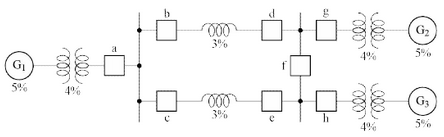
[계산과정]
정답
[계산과정]
정답
해설) 복합 계산형 / 난이도 상
[계산과정]
차단기 a에 흐르는 단락 전류: 발전기 \(G_1\)측
단락 용량 \(P_s = \frac{10[MVA]}{9[\%]} \approx 111.11\) [MVA]
정답 111.11 [MVA]
[계산과정]
차단기 a에 흐르는 단락전류: 발전기 \(G_2\)와 발전기 \(G_3\)측
합성 %임피던스 = $ + = 6[%] $
단락용량 $P_s = [MVA] $
정답 166.67 [MVA]
| 점수 | 세부기준 |
|---|---|
| 5점 | 문항 (1), (2)가 모두 맞은 경우 5점 획득 |
| 2점 | 문항 (1)의 계산과정과 답안이 모두 맞으면 2점, 오류가 있으면 0점 |
| 3점 | 문항 (2)의 계산과정과 답안이 모두 맞으면 3점, 오류가 있으면 0점 |
차단기 a의 바로 우측에서 단락고장이 일어났을 경우에 \(G_1\)에서 공급되는 전류만 차단기 a에 흐르고, \(G_2\) 및 \(G_3\)에서 공급되는 전류는 차단기 a를 통하지 않게 된다.
차단기 a의 바로 좌측에서 단락고장이 일어났을 경우에 \(G_2\) 및 \(G_3\)에서 공급되는 전류는 차단기 a에 흐르고 \(G_1\)에서 공급되는 전류는 차단기 a를 통하지 않게 된다.
| 수용가 | A | B | C | D |
|---|---|---|---|---|
| 설비용량 [kW] | 10 | 20 | 30 | 20 |
| 수용률 | 0.8 | 0.8 | 0.6 | 0.6 |
[계산과정]
정답
해설) 단순 계산형 / 난이도 下
정답
[계산과정]
\[ 합성 최대전력 = \frac{10 \times 0.8 + 20 \times 0.8 + 30 \times 0.6 + 20 \times 0.6}{1.3} \approx 41.54 \text{[kW]} \]
정답 41.54[kW]
부분점수
| 점수 | 세부기준 |
|---|---|
| 4점 | 계산과정과 정답이 모두 맞은 경우 4점 획득, 오류가 있으면 0점 |
해설
[수용률]
\[ 수용률 = \frac{\text{최대수요전력}}{\text{설비용량}} \]
총 부하설비용량에 대한 최대 수요 전력의 비율이다. 수용설비가 동시에 사용되는 정도이다.
[부등률]
\[ 부등률 = \frac{\text{각 부하군의 최대수요전력의 합}}{\text{합성 최대수요전력}} \geq 1 \]
각 부하군의 최대수요전력의 합과 합성 최대수요전력과의 비이다. 최대부하를 나타내는 각 부하의 시간대가 다른 정도를 의미한다.
[부하율]
\[ 부하율 = \frac{\text{평균부하}}{\text{최대부하}} \]
평균부하: 정해진 기간동안 사용된 전력량의 평균이다.
최대부하: 정해진 기간에서의 최대전력이다.
1에 가까울수록 전원설비를 효율적으로 사용함을 의미한다.
상순은 a-b-c이다.
$ V_a = 7.3^, V_b = 0.4^, V_c = 4.4^$[V]이다.
[계산과정]
정답
[계산과정]
정답
[계산과정]
정답
[계산과정]
\[ V_0 = \frac{1}{3}(V_a + V_b + V_c) \]
\[ = \frac{1}{3}(7.3\angle 12.5^\circ + 0.4\angle -100^\circ + 4.4\angle 154^\circ) \]
\[ = 1.03 + j1.04 [V] = 1.47\angle 45.11^\circ [V] \]
정답 $1.47^$[V]
[계산과정]
\[ V_1 = \frac{1}{3}(V_a + aV_b + a^2V_c) \]
\[ = \frac{1}{3}(7.3\angle 12.5^\circ + 1\angle 120^\circ \times 0.4\angle -100^\circ + 1\angle 240^\circ \times 4.4\angle 154^\circ) \]
\[ = 3.72 + j1.39 [V] = 3.97\angle 20.54^\circ [V] \]
정답 \(3.97\angle 20.54^\circ\) [V]
[계산과정]
\[ V_2 = \frac{1}{3}(V_a + a^2V_b + aV_c) \]
\[ = \frac{1}{3}(7.3\angle 12.5^\circ + 1\angle 240^\circ \times 0.4\angle -100^\circ + 1\angle 120^\circ \times 4.4\angle 154^\circ) \]
\[ = 2.38 - j0.85 [V] = 2.52\angle -19.7^\circ [V] \]
정답 \(2.52\angle -19.7^\circ\) [V]
부분점수
| 점수 | 세부기준 |
|---|---|
| 6점 | 소문항 (1)~(3) 총 3개의 계산과정과 정답이 모두 맞은 경우 6점 획득 |
| 2점 | 소문항 총 3개 중 계산과정과 정답이 모두 맞은 1개당 2점 획득 |
접근 POINT
필기 유형이지만 최근 5년간 2회 출제되었으므로 대칭분의 공식을 정확히 암기하고, 대칭분의 의미도 이해해야 한다.
해설
상전압(\(V_a, V_b, V_c\))과 영상전압(\(V_0\)), 정상전압(\(V_1\)), 역상전압(\(V_2\))의 관계 행렬
\[ \begin{pmatrix} V_a \\ V_b \\ V_c \end{pmatrix} = \begin{pmatrix} 1 & 1 & 1 \\ 1 & a^2 & a \\ 1 & a & a^2 \end{pmatrix} \begin{pmatrix} V_0 \\ V_1 \\ V_2 \end{pmatrix}, \begin{pmatrix} V_0 \\ V_1 \\ V_2 \end{pmatrix} = \frac{1}{3}\begin{pmatrix} 1 & 1 & 1 \\ 1 & a^2 & a \\ 1 & a & a^2 \end{pmatrix} \begin{pmatrix} V_a \\ V_b \\ V_c \end{pmatrix} \]
\[ 여기서, 1 + a + a^2 = 0, a^3 = 1, \]
\[ a = 1\angle 120^\circ = -\frac{1}{2} + j\frac{\sqrt{3}}{2}, a^2 = 1\angle 240^\circ = -\frac{1}{2} - j\frac{\sqrt{3}}{2} \]
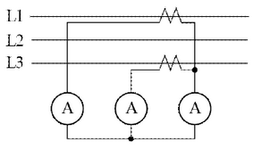
[계산과정]
정답
정답
[계산과정]
\[ CT 1차전류 I_1 = 4.2 \times \frac{50}{5} = 42 [A] \]
\[ 수전전력 P = \sqrt{3} \times 6600 \times 42 \times 1 \times 10^{-3} = 480.124 [kW] \]
정답 480.12 [kW]
부분점수
| 점수 | 세부기준 |
|---|---|
| 4점 | 계산과정과 답이 모두 맞으면 4점 획득 |
| 0점 | 계산과정에 오류가 있거나 정답이 틀린 경우 |
접근 POINT
CT의 가동접속(정상 접속)에 의한 부하전력을 계산하는 문제이다. CT의 결선법에 유의(차동접속을 하면 답에 \(\sqrt{3}\)배 차이남)하여 1차 전류를 구하고 3상 수전전력을 계산한다.
해설
CT 결선법
① 가동 접속(정상 접속)
\(I_a\)는 부하전류이며, \(I_b, I_c\)는 CT 2차 전류이다.
\(I_b + I_c\)는 전류계 지시값으로, CT 2차측 전류와 같은 크기의 값을 나타낸다.
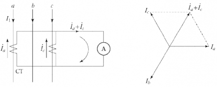
② 차동접속(교차접속)
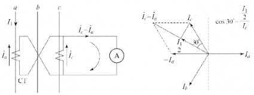
[계산과정]
정답
[계산과정]
정답
[계산과정]
정답
[계산과정]
\[ 부하의 유효전력 P = 5,000 \times 0.75 = 3,750[kW] \]
\[ 무효전력 Q = 5,000 \times \sqrt{1 - 0.75^2} = 3,307.189[kVar] \]
1,000[kVA] 콘덴서 설치 후 무효전력
\[ Q' = 3,307.189 - 1,000 = 2,307.189[kVar] \]
\[ 역률 \cos\theta = \frac{3,750}{\sqrt{3,750^2 + 2,307.19^2}} \times 100 = 85.170 [\%] \]
정답 85.17[%]
[계산과정]
추가 설치할 수 있는 부하를 P[kW]라고 한다.
\[ \sqrt{(3,750 + P)^2 + (2,307.19 + 0.75P)^2} = 5,000 \]
\[ P = 479.454[kW] \]
추가할 수 있는 최대 부하용량은 479.45[kW]이다.
정답 479.45[kW]
[계산과정]
\[ 추가 부하 설치 후 유효전력 = 3,750 + 479.45 = 4,229.45[kW] \]
\[ 무효전력 = 2,307.19 + 0.75 \times 479.45 = 2,666.777[kVar] \]
\[ 역률 \cos\theta = \frac{4,229.45}{\sqrt{4,229.45^2 + 2,666.777^2}} \times 100 = 84.589 [\%] \]
정답 84.59[%]
| 점수 | 세부기준 |
|---|---|
| 8점 | 문항 (1), (2), (3)이 모두 맞은 경우 8점 획득 |
| 2점 | 문항 (1)의 계산과정과 답안이 모두 맞으면 2점, 오류가 있으면 0점 |
| 3점 | 문항 (2)의 계산과정과 답안이 모두 맞으면 3점, 오류가 있으면 0점 |
| 3점 | 문항 (3)의 계산과정과 답안이 모두 맞으면 3점, 오류가 있으면 0점 |
역률 개선용 콘덴서는 진상 무효전력을 통해 지상 무효전력의 크기를 줄여서 역률을 개선하는 원리이다. 이 문제처럼 추가 부하를 통하여 유효전력 P가 변하는 경우에는 공식 Q = \(P(\tan\theta_1 - \tan\theta_2)\)를 적용할 수 없음에 유의해야 한다. 이 공식은 유효전력 P가 일정한 조건에서만 적용이 가능하다.
유효전력 P = \(P_a \times \cos\theta\), 무효전력 Q = $P_a $
유효전력을 P, 역률을 \(\cos\theta\)일 때
피상전력 P_a = , 무효전력 Q = $P_a = P_a $
교류계통에는 인덕턴스 L, 정전용량 C가 존재하여 전압과 전류 사이에 위상차가 발생하는데 이 때의 위상차에 대한 인수(factor)를 회로의 역률(Power factor)이라 하며 \(\cos\theta\)로 표현한다.
\[ \cos\theta = \frac{\text{유효전력 [W]}}{\text{피상전력 [VA]}} = \frac{P}{VI} \]
수전단에 콘덴서 Q 설치 시 유도성 무효전력을 보상하여 역률각 \(\theta_1 \to \theta_2\)이 되어 역률이 개선된다.
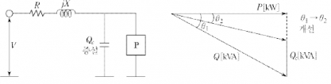
(1) 전력 손실의 감소: 선로전류 감소로 전력손실(\(I^2R\))이 저감된다.
\[ P_1 = 3I^2R, P_1 \propto \frac{1}{\cos^2\theta} \]
\[ 전력 손실비: \frac{P_1}{P_2} = \frac{I_1^2R}{I_2^2R} = \left(\frac{\cos\theta_2}{\cos\theta_1}\right)^2 \]
\[ 전력손실 감소율: 1 - \left(\frac{\cos\theta_1}{\cos\theta_2}\right)^2 \]
\[ 전압 강하식: \Delta V = \frac{P}{V_r}(R + X\tan\theta) \]
\[ \frac{\Delta V_1 - \Delta V_2}{P} = \frac{P_r R + P_r \tan\theta_1 \cdot X}{V_r} - \frac{P_r R + P_r \tan\theta_2 \cdot X}{V_r} \]
\[ = \frac{P_r X}{V_r}(\tan\theta_1 - \tan\theta_2) \]
$ [_1 - _2] >$ 0이므로, \(\Delta V_1 > \Delta V_2\)가 된다.
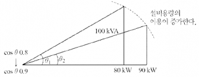
동일한 100[kVA]의 변압기에 대하여 부하 역률이 0.8에서 0.9로 증가하면, 변압기가 공급할 수 있는 유효전력은 80[kW]에서 90[kW]로 증가되어 설비의 여유도가 증가된다.
| A | B | C | Y₁ | Y₂ |
|---|---|---|---|---|
| 0 | 0 | 0 | 0 | 1 |
| 0 | 0 | 1 | 0 | 1 |
| 0 | 1 | 0 | 0 | 1 |
| 0 | 1 | 1 | 0 | 0 |
| 1 | 0 | 0 | 0 | 1 |
| 1 | 0 | 1 | 1 | 1 |
| 1 | 1 | 0 | 1 | 1 |
| 1 | 1 | 1 | 1 | 0 |
정답 \[ ① Y_1 = \] \[ ② Y_2 = \]
① 유접점 회로
② 무접점 회로
[계산과정]
\[ Y_1 = \overline{A} \cdot B \cdot \overline{C} + A \cdot \overline{B} \cdot \overline{C} + A \cdot \overline{B} \cdot C \]
\[ = A \cdot (\overline{B} \cdot \overline{C} + \overline{B} \cdot C) \text{ (드모르간 법칙)} = A \cdot (B + C) \]
\[ Y_2 = (\overline{A} \cdot B \cdot \overline{C} + A \cdot \overline{B} \cdot C) (: 여집합) \]
\[ = (B \cdot \overline{C}) (: A + \overline{A} = 1) = B + \overline{C} (: A + \overline{A} = 1) \]
정답 ① $Y_1 = A (B + C), ② Y_2 = B + $
정답
① 유접점 회로
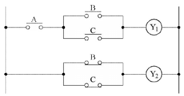
② 무접점 회로
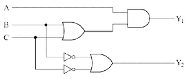
부분점수
| 점수 | 세부기준 |
|---|---|
| 6점 | 소문항 (1)~(2) 총 2개의 계산과정과 정답이 모두 맞은 경우 6점 획득 |
| 2점 | 소문항 (1)의 계산과정과 정답이 모두 맞은 경우 2점 획득 |
| 4점 | (2)의 도면작성 2개 중 정답 1개당 2점 획득 |
[계산과정]
정답
해설) 단순 계산형 / 난이도 下
정답
[계산과정] \[ E = \frac{8,000 \times 0.45}{\frac{1}{2} \times 20 \times 15 \times 1} = 24 [lx] \]
정답 24[lx]
부분점수
| 점수 | 세부기준 |
|---|---|
| 5점 | 계산과정과 답이 모두 맞으면 5점 획득 |
| 0점 | 계산과정과 답에 오류가 있으면 0점 |
접근 POINT
도로 조명 설계를 위하여 FUN=EAD를 적용하여 풀이할 때, 조명의 배열 상태에 유의하여 면적 A를 구한다.
해설
조명 공식 FUN=EAD
F(광속, lm), U(조명률, %), N(등기구 수), E(조도, lx), A(면적), D(감광보상률)
문제의 조건은 도로 양쪽 대칭 배열이므로 면적 A =$ BS$를 적용한다.
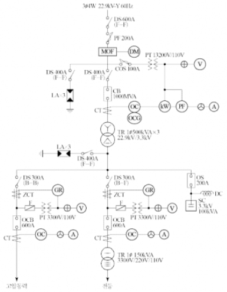
정답
정답
정답
정답
정답
정답
정답
정답
정답
정답
정답
정답
정답
해설) 복합 이론형 / 난이도 中
최대수요전력량계
25.8[kV]
과전류 시 용단되어 기기를 보호한다.
역률을 개선한다.
18[kV]
지락사고 시 영상 전류를 검출한다.
ZCT에서 검출된 영상전류에 의해 차단기 트립코일을 여자시킨다.
부하전류 개폐, 사고전류 차단
VS
AS
유입개폐기
전기계기 또는 측정장치와 함께 사용되는 전류 및 전압의 변성용 기기
정격차단전류
| 점수 | 세부기준 |
|---|---|
| 13~0점 | 소문항 총 13개 중 정답 1개당 부분점수 1점 획득 |
도면을 보고 해당 명칭을 묻는 문제로 암기 위주로 접근해야 한다.